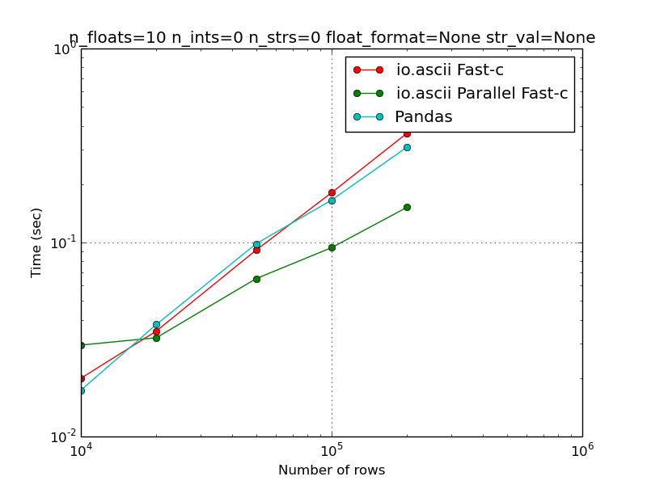
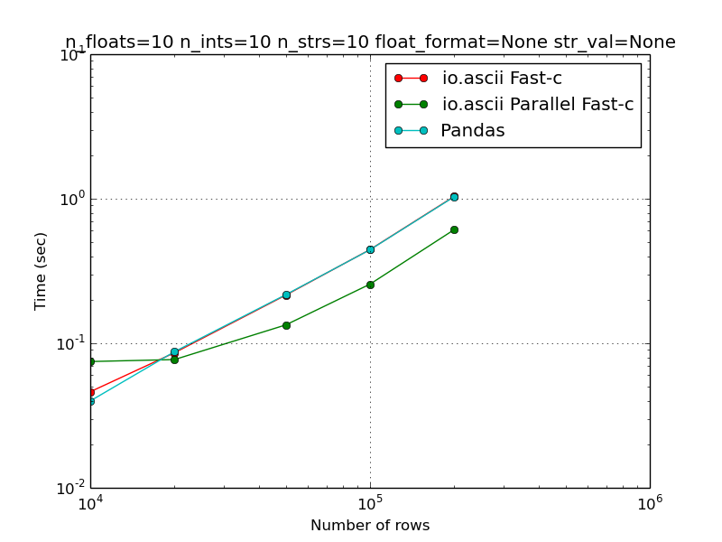
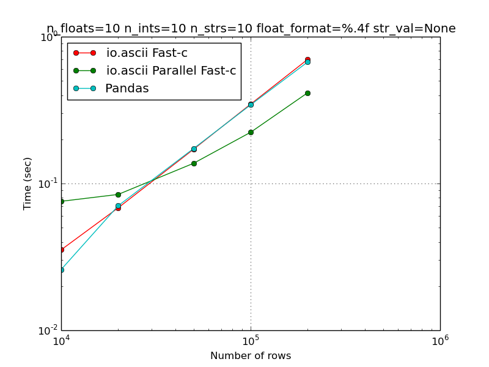
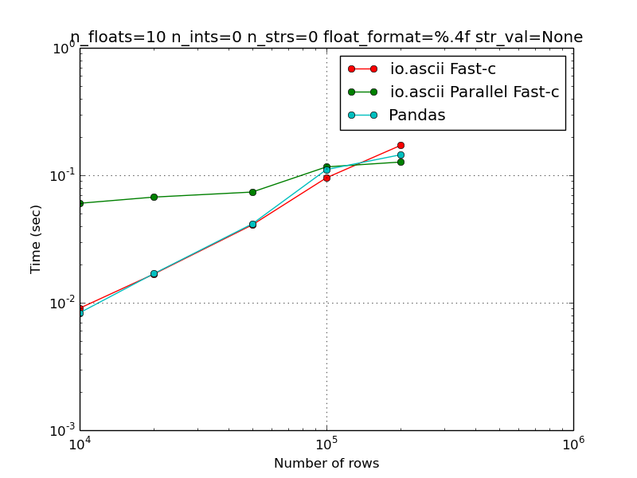
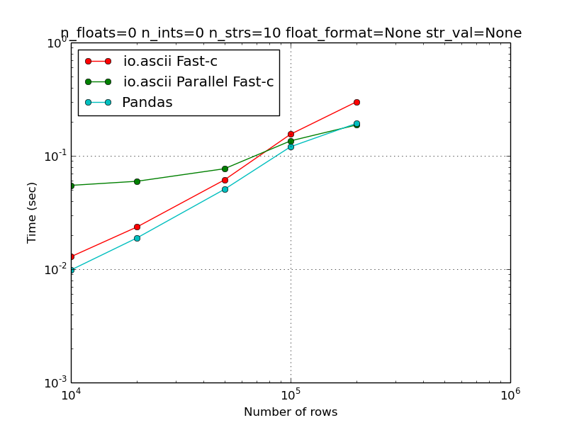
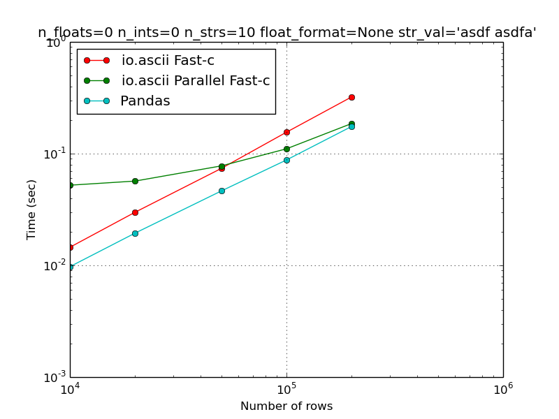
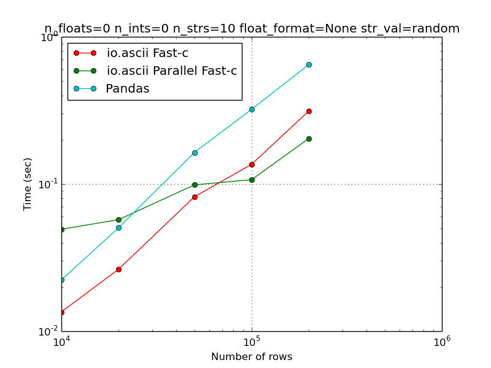
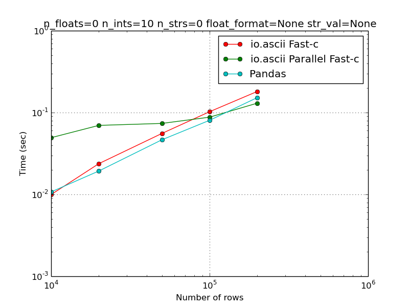

<html><head><meta charset="utf-8"/><meta content="text/html;charset=UTF-8" http-equiv="Content-type"/></html><body><h1 style="text-align:center;">Profile of io.ascii</h1><p style="font-weight:bold;">Pandas to io.ascii Fast-C speed ratio: 1.18 : 1<br/>io.ascii parallel to Pandas speed ratio: 2.04 : 1</p><hr><p style="font-weight:bold;">Pandas to io.ascii Fast-C speed ratio: 1.01 : 1<br/>io.ascii parallel to Pandas speed ratio: 1.69 : 1</p><hr><p style="font-weight:bold;">Pandas to io.ascii Fast-C speed ratio: 1.04 : 1<br/>io.ascii parallel to Pandas speed ratio: 1.62 : 1</p><hr><p style="font-weight:bold;">Pandas to io.ascii Fast-C speed ratio: 1.18 : 1<br/>io.ascii parallel to Pandas speed ratio: 1.14 : 1</p><hr><p style="font-weight:bold;">Pandas to io.ascii Fast-C speed ratio: 1.55 : 1<br/>io.ascii parallel to Pandas speed ratio: 1.03 : 1</p><hr><p style="font-weight:bold;">Pandas to io.ascii Fast-C speed ratio: 1.84 : 1<br/>io.ascii parallel to Pandas speed ratio: 0.94 : 1</p><hr><p style="font-weight:bold;">Pandas to io.ascii Fast-C speed ratio: 0.48 : 1<br/>io.ascii parallel to Pandas speed ratio: 3.18 : 1</p><hr><p style="font-weight:bold;">Pandas to io.ascii Fast-C speed ratio: 1.19 : 1<br/>io.ascii parallel to Pandas speed ratio: 1.17 : 1</p><hr></body></html>